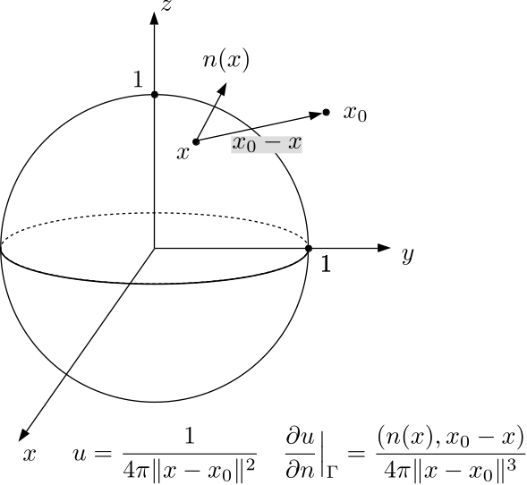
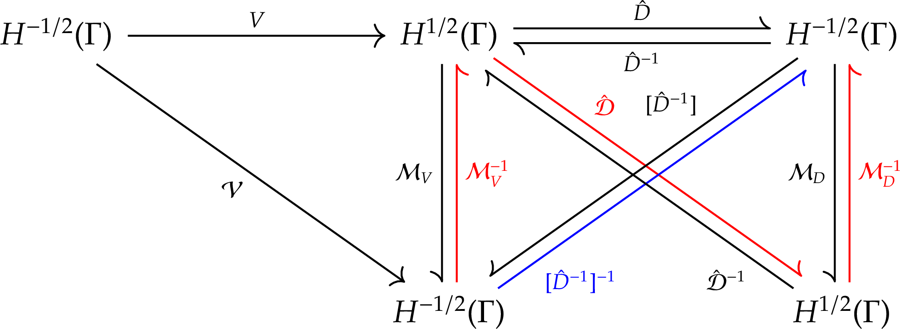
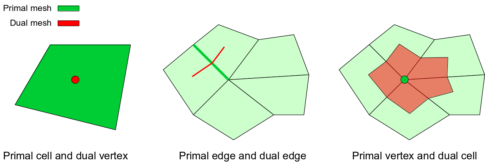
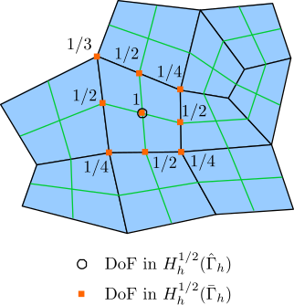
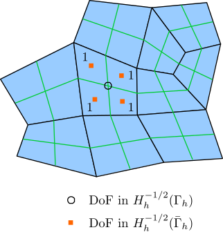
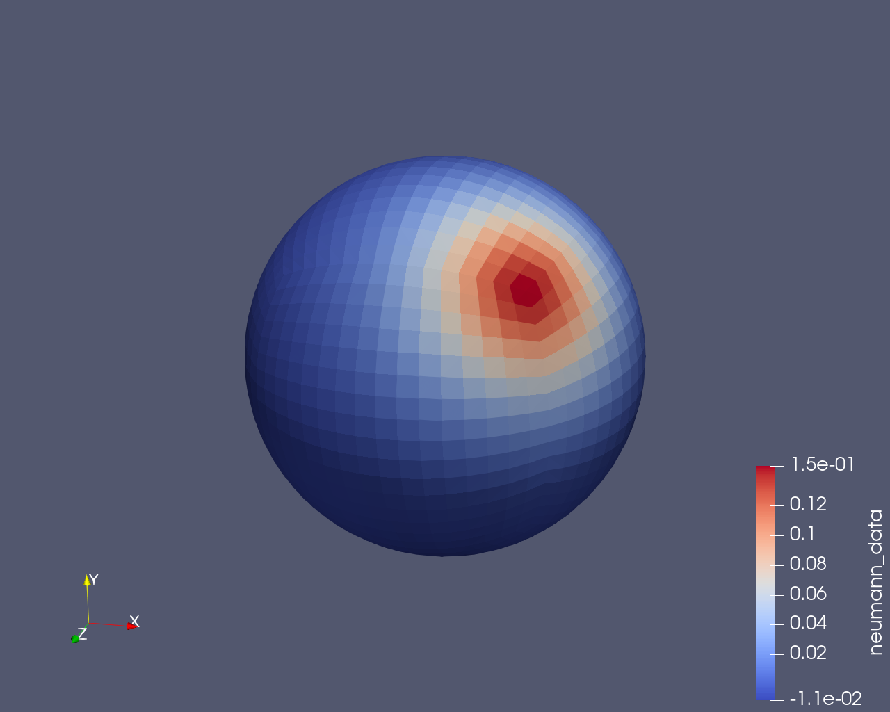
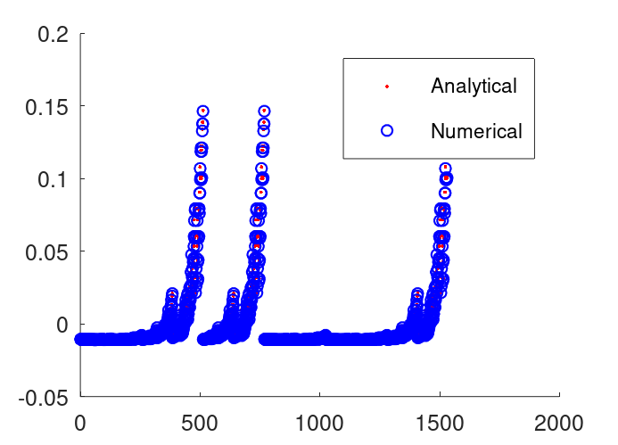

Solve the Laplace equation with a Dirichlet boundary condition on a sphere
Problem description
The Laplace equation with a Dirichlet boundary condition is generally given as
\[\begin{equation} \begin{aligned} -\Delta u &= 0 \quad x\in\Omega \\ \gamma_0^{\mathrm{int}} u &= g_{\mathrm{D}} \quad x\in\Gamma, \end{aligned} \end{equation}\]where \(u\in H^1(\Omega)\) and \(g_{\mathrm{D}}\in H^{1/2}(\Gamma)\).
In this example, the domain \(\Omega\) is a unit ball in \(\mathbb{R}^3\) at the origin. For a point \(x\) on the spherical boundary \(\Gamma\), \(n(x)\) is the outward unit normal vector at \(x\). Assume there is a unit positive Dirac source \(\delta(x-x_0)\) at \(x_0\) which is outside the sphere, i.e. \(\lvert x_0 \rvert > 1\). Then the potential produced by this Dirac source in the whole space except \(x_0\) is the fundamental solution of the Laplace equation:
\[\begin{equation} u(x) = U^{\ast}(x,x_0) = \frac{1}{4\pi\norm{x-x_0}} \quad x\in \mathbb{R}^3, x\neq x_0, \end{equation}\]Let the Dirichlet boundary condition \(g_{\mathrm{D}}\) be a restriction of this fundamental solution on the unit sphere \(\Gamma\). The interior conormal trace or Neumann trace of \(u\) is
\[\begin{equation} \gamma_1^{\mathrm{int}}u = \frac{\partial u}{\partial n}\Big\vert_{\Gamma} = n(x)\cdot\nabla_x \left( \frac{1}{4\pi\norm{x-x_0}} \right) = \frac{1}{4\pi}\frac{(n(x), x_0-x)}{\norm{x-x_0}^3} \quad x\in\Gamma, \end{equation}\]where \((n(x), x_0-x)\) is the inner product of \(n(x)\) and \(x_0-x\). The interior conormal trace \(\gamma_1^{\mathrm{int}} u\) is what we are going to solve using the Galerkin BEM.
The model is illustrated in the following figure. It can be seen that, if the field point \(x\) is near the source point \(x_0\) and the normal vector \(n(x)\) points approximately toward \(x_0\), the inner product of \(n(x)\) and \(x_0-x\) is positive, which means the normal derivative of the potential is positive. If we consider the Laplace equation as describing a distribution of electric potential, the electric field at \(x\) generated by the positive charge at \(x_0\) points into the ball.

Boundary integral equation and its matrix form for the Laplace Dirichlet problem
As described in the previous example, the boundary integral equation associated with the PDE can be derived by following these steps.
-
Start from Green’s first identity.
\[\begin{equation} a(u,v) = \int_{\Omega} (Lu)(x)v(x) \intd x + \int_{\Gamma} \gamma_1^{\rm int}u(x) \gamma_0^{\rm int}v(x) \intd s. \label{eq:green-1st-identity-general} \end{equation}\] -
Derive Green’s second identity by using the symmetry of the bilinear form \(a(u,v)\).
\[\begin{equation} \begin{split} \int_{\Omega} (Lu)(x)v(x) \intd x - \int_{\Omega}(Lv)(x)u(x) \intd x = \\ \int_{\Gamma}\gamma_1^{\rm int}v(x)\gamma_0^{\rm int}u(x) \intd s - \int_{\Gamma} \gamma_1^{\rm int}u(x)\gamma_0^{\rm int}v(x) \intd s. \end{split} \label{eq:green-2nd-identity-general} \end{equation}\] -
Substitute the solution of the Laplace equation for \(u\) and the fundamental solution \(U^{\ast}(x,y)\) for \(v\) in Green’s second identity, we get the representation formula of the potential in the domain.
\[\begin{equation} u(x) = \int_{\Gamma} U^{\ast}(x,y) \gamma_{1,y}^{\mathrm{int}} u(y) \intd s_y - \int_{\Gamma} \gamma_{1,y}^{\mathrm{int}} U^{\ast}(x,y) \gamma_0^{\mathrm{int}} u(y) \intd s_y \quad x\in\Omega. \label{eq:representation-formula} \end{equation}\] -
Take the interior Dirichlet trace of the representation formula, we get the boundary integral equation for solving the Laplace Dirichlet problem, which is just the first equation in the Calderón system.
\[\begin{equation} (V \gamma_1^{\mathrm{int}} u)(x) = ((\sigma I+K) \gamma_0^{\mathrm{int}}u)(x) = ((\sigma I+K) g_{\mathrm{D}})(x) \quad x\in\Gamma. \label{eq:bie-for-dirichlet} \end{equation}\]
In Equation \eqref{eq:bie-for-dirichlet}, the interior conormal trace satisfies \(\gamma_1^{\mathrm{int}} u\in H^{-1/2}(\Gamma)\) and the interior Dirichlet trace satisfies \(\gamma_0^{\mathrm{int}} u\in H^{1/2}(\Gamma)\). Testing this BIE with \(v\in H^{-1/2}(\Gamma)\) yields the variational formulation
\[\begin{equation} b_V(\gamma_1^{\mathrm{int}} u, v) = b_{\sigma I + K}(g_{\mathrm{D}}, v). \end{equation}\]To discretize the variational formulation, we approximate \(H^{1/2}(\Gamma)\) with the piecewise linear Lagrange polynomial space and approximate \(H^{-1/2}(\Gamma)\) with the piecewise constant function space. Then we obtain the matrix form
\[\begin{equation} \mathcal{V} [t] = \left[ \sigma \mathcal{M} + \mathcal{K} \right] [g_{\mathrm{D}}]. \end{equation}\]Because \(b_V: H^{-1/2}(\Gamma) \times H^{-1/2}(\Gamma) \rightarrow \mathbb{R}\) is a symmetric bilinear form, i.e. the kernel function \(U^{\ast}(x,y)\) is symmetric and the trial and test spaces of \(b_V\) are a same function space \(H^{-1/2}(\Gamma)\), the matrix \(\mathcal{V}\) is also symmetric. Hence, the matrix equation can be iteratively solved by using the conjugate gradient (CG) method. When the number of DoFs is large, a preconditioner is needed to limit the condition number of the linear system, hence the number of iterations can be effectively controlled.
Basic idea of preconditioning
The single layer potential boundary integral operator \(V: H^{-1/2}(\Gamma) \rightarrow H^{1/2}(\Gamma)\) is a bounded linear operator. The associated bilinear form \(b_V\) is also bounded:
\[\begin{equation} b_v(w,w) = \langle Vw,w \rangle \leq c_2^V \lVert w \rVert_{H^{-1/2}(\Gamma)}^2 \quad \forall w\in H^{-1/2}(\Gamma). \end{equation}\]Meanwhile, \(V\) is \(H^{-1/2}(\Gamma)\)-elliptic
\[\begin{equation} \langle Vw,w \rangle \geq c_1^V \lVert w \rVert_{H^{-1/2}(\Gamma)}^2 \quad w\in H^{-1/2}(\Gamma). \end{equation}\]We can consider \(b_V(w,w)\) or \(\langle Vw,w \rangle\) as an energy norm for \(w\), while \(b_V(w,w)/\lVert w \rVert_{H^{-1/2}(\Gamma)}^2\) or \(\langle Vw,w \rangle/\lVert w \rVert_{H^{-1/2}(\Gamma)}^2\) as a normalized energy norm. \([c_1^V,c_2^V]\) is the range of this normalized energy norm, which is also the range of the spectrum of the operator \(V\).
If we consider a finite dimensional subspace \(H^{-1/2}_h(\Gamma)\) of \(H^{-1/2}(\Gamma)\), the approximation function for \(w\) becomes \(w_h\). Let \(\{ \varphi_k \}_{k=1}^N\) be a basis of \(H^{-1/2}_h(\Gamma)\), then the function \(w_h\) can be represented as
\[\begin{equation} w_h=\sum_{k=1}^N w_k\varphi_k. \end{equation}\]\(w_h\) can be identified with a vector \([w]\in \mathbb{R}^N\) comprising the expansion coefficients \(\{ w_k \}_{k=1}^N\). The bilinear form \(b_V\) can be discretized into a matrix \(\mathcal{V}\), whose coefficient is
\[\begin{equation} \mathcal{V}_{ij}=\langle V\varphi_j,\varphi_i \rangle. \end{equation}\]This matrix \(\mathcal{V}\) has similar boundedness and ellipticity properties as the operator \(V\), but with different boundedness and ellipticity constants:
\[\begin{equation} \tilde{c}_1^V \lVert [w] \rVert^{2} \leq [w]^{\mathrm{T}}\mathcal{V}[w] \leq \tilde{c}_2^V \lVert [w] \rVert^{2} \quad \forall [w]\in \mathbb{R}^N. \end{equation}\]\(\tilde{c}_1^V\) and \(\tilde{c}_2^V\) correspond to the minimum and maximum eigenvalues of \(\mathcal{V}\) and the range \([\tilde{c}_1^A,\tilde{c}_2^A]\) is the matrix spectrum. Because \(\mathcal{V}\) is a finite dimensional approximation of \(V\), it operates on a smaller space and we must have \(c_1^V\leq \tilde{c}_1^V\) and \(\tilde{c}_2^V\leq c_2^V\). Therefore, the matrix’s spectrum is contained within the operator’s spectrum: \([\tilde{c}_1^A,\tilde{c}_2^A] \subset [c_1^A,c_2^A]\).
The basic idea of constructing a preconditioner for \(V\) is to select another operator \(B: H^{1/2}(\Gamma) \rightarrow H^{-1/2}(\Gamma)\) whose inverse \(B^{-1}: H^{-1/2}(\Gamma) \rightarrow H^{1/2}(\Gamma)\) is spectrally equivalent to \(V\):
\[\begin{equation} \gamma_1 \langle B^{-1}w,w \rangle \leq \langle Vw,w \rangle \leq \gamma_2 \langle B^{-1}w,w \rangle \quad \forall w\in H^{-1/2}(\Gamma). \end{equation}\]If the spectrum of \(B\) is \([c_1^B,c_2^B]\), the spectrum of its inverse \(B^{-1}\) is \([\frac{1}{c_2^B},\frac{1}{c_1^B}]\). Then we have
\[\begin{equation} \gamma_1=c_1^V c_1^B, \gamma_2=c_2^V c_2^B. \end{equation}\]In the finite dimensional space \(H^{-1/2}_h(\Gamma)\), the spectral equivalence condition is
\[\begin{equation} \gamma_1 \langle B^{-1}w_h,w_h \rangle \leq \langle Vw_h,w_h \rangle \leq \gamma_2 \langle B^{-1}w_h,w_h \rangle \quad \forall w_h\in H^{-1/2}_h(\Gamma). \end{equation}\]After discretization, the spectral equivalence condition becomes
\[\begin{equation} \gamma_1 \langle [B^{-1}] [w],[w] \rangle \leq \langle \mathcal{V}[w],[w] \rangle \leq \gamma_2 \langle [B^{-1}][w],[w] \rangle \quad \forall [w]\in \mathbb{R}^N. \end{equation}\]The spectral equivalence condition determines the condition number \(\kappa\) of the preconditioned matrix system
\[\begin{equation} \kappa([B^{-1}]^{-1}\mathcal{V}) \leq \frac{\gamma_2}{\gamma_1} = \frac{c_2^V c_2^B}{c_1^V c_1^B}, \end{equation}\]where the constants \(c_1^V, c_1^B, c_2^V, c_2^B\) do not depend on the geometric discretization nor the function discretization. This leads to a nice feature we desire: when an iterative solver is adopted to solve the preconditioned matrix system, the number of iterations is stable and will not increase with the problem size or existence of sharp geometric features.
Finally, we clarify the terminology related to preconditioners:
- \(B\) as an operator is called the preconditioner of \(V\), whose inverse \(B^{-1}\) is spectrally equivalence to \(A\).
- The discretization of \(B^{-1}\) into a matrix \([B^{-1}]\) is called the preconditioning matrix of \(\mathcal{V}\).
- The actual matrix multiplied to both sides of the matrix equation is the inverse matrix \([B^{-1}]^{-1}\). Of course, in a real implementation of a preconditioner, \([B^{-1}]^{-1}\) will never be computed via matrix inverse. Instead, it will be constructed with the help of the operator preconditioning theory.
Operator preconditioning based on pseudodifferential operator theory
To find an appropriate preconditioner for the boundary integral operator \(V\), we can examine how \(V\) influences the frequency spectrum of an input function \(w\). If we can find an operator \(B\) which cancels either perfectly or partially the influence of \(V\) on \(w\)’s spectrum, the composition \(B V\) will be an approximation of the identity operator and \(B\) will be a good choice as a preconditioner for \(V\).
We can analyze the frequency spectrum of a function with the Fourier transform. In the frequency domain, both partial differential operators and boundary integral operators can be treated in a same framework with the pseudodifferential operator theory. We already know the derivative properties of the Fourier transform:
-
Fourier transform on a rapidly decreasing function \(\varphi\)
\[\begin{equation} \begin{aligned} D^{\alpha}(\mathcal{F}\varphi)(\xi) &= (-\rmi)^{\abs{\alpha}}\mathcal{F}(x^{\alpha}\varphi)(\xi) \\ \mathcal{F}(D^{\alpha}\varphi)(\xi)&=\rmi^{\abs{\alpha}}\xi^{\alpha}(\mathcal{F}\varphi)(\xi) \end{aligned} \end{equation}\] -
Fourier transform on a tempered distribution \(T\)
\[\begin{equation} \begin{aligned} D^{\alpha}(\mathcal{F}T)&=(-\rmi)^{\abs{\alpha}}\mathcal{F}(\xi^{\alpha}T)\\ \mathcal{F}(D^{\alpha}T)&=\rmi^{\abs{\alpha}}x^{\alpha}(\mathcal{F}T) \end{aligned} \end{equation}\]
When the partial differential operator \(D^{\alpha}\) is applied to a function \(\varphi\) or a distribution \(T\), it is equivalent to multiplying a factor \(\xi^{\alpha}\) or \(x^{\alpha}\) to the Fourier transform of the original \(\varphi\) or \(T\) then being scaled by a complex constant \(\mathrm{i}^{\lvert \alpha \rvert}\). Therefore, for a general linear partial differential operator
\[\begin{equation} L = \sum_{\lvert \alpha \rvert\leq k} a_{\alpha}(x) D^{\alpha}, a_{\alpha}(x)\in C^{\infty}(\Omega), \end{equation}\]its influence on a rapidly decreasing function \(u\) in the frequency domain is multiplying a polynomial \(\sigma_L(x,\xi)\) in the variable \(\xi\) to the spectrum \(\hat{u}(\xi)\) of \(u\), i.e.
\[\begin{equation} \mathcal{F}(Lu)(\xi) = \sigma_L(x,\xi) \hat{u}(\xi) = \left( \sum_{\lvert \alpha \rvert\leq k} a_{\alpha}(x)\mathrm{i}^{\lvert \alpha \rvert}\xi^{\alpha} \right) \hat{u}(\xi). \end{equation}\]If we generalize the polynomial \(\sigma_L(x,\xi)\) to a larger class of functions \(p(x,\xi)\), \(L\) can represent more types of linear operators, such as integral operators. This brings about the concept of pseudodifferential operators, which can handle partial differential and boundary integral operators in a same framework.
Definition (Space of symbols) The space of symbols of order \(m\) is a set containing all functions \(p(x,\xi)\in C^{\infty}(\Omega\times \mathbb{R}^d)\) such that for all multi-indices \(\alpha\) and \(\beta\) and any compact set \(K\subset\Omega\), there exists \(C_{\alpha,\beta,K}\) satisfying
\[\begin{equation} \sup_{x\in K} \lvert D_x^{\beta}D_{\xi}^{\alpha}p(x,\xi) \rvert \leq C_{\alpha,\beta,K}(1+\lvert \xi \rvert)^{m-\lvert \alpha \rvert}. \end{equation}\]Definition (Pseudodifferential operator) A pseudodifferential operator \(p(x,D)\) of order \(m\) is a linear map from the test function space \(\mathcal{D}(\Omega)\) to \(C^{\infty}(\Omega)\) such that
\[\begin{equation} \mathcal{F}(p(x,D)u) = p(x,\xi)\hat{u}(\xi), \end{equation}\]where \(p(x,\xi)\) is a symbol of order \(m\).
Assume the boundary integral operator \(V\) is a pseudodifferential operator of order \(m\). It has a symbol \(p(x,\xi)\) which is comparable to the polynomial \(1+\lvert \xi \rvert^m\). If the preconditioner \(B\) is another pseudodifferential operator of order \(-m\) whose symbol is comparable to \(\frac{1}{1+\lvert \xi \rvert^m}\), then the symbol of the composite operator \(BA\) will be comparable to \(1\), i.e. \(BA\) is similar to an identity operator. The operator preconditioning method is to look for a pseudodifferential operator having an opposite order compared to the original operator.
For boundary integral operators \(V, K, K', D\) in BEM, when they are considered as pseudodifferential operators, their orders are listed below.
| Boundary integral operator | Order |
|---|---|
| \(V: H^{-1/2}(\Gamma) \rightarrow H^{1/2}(\Gamma)\) | -1 |
| \(K: H^{1/2}(\Gamma) \rightarrow H^{1/2}(\Gamma)\) | 0 |
| \(K': H^{-1/2}(\Gamma) \rightarrow H^{-1/2}(\Gamma)\) | 0 |
| \(D: H^{1/2}(\Gamma) \rightarrow H^{-1/2}(\Gamma)\) | 1 |
In the Laplace equation with a Dirichlet boundary condition, the main operator in the BIE is \(V\). When the boundary condition is of Neumann type, the main operator in the BIE is \(D\). \(V\) and \(D\) are pseudodifferential operators with opposite orders. Therefore, \(D\) is inherently the preconditioner of \(V\) and vice versa.
In addition, from the following identities
\[\begin{equation} \begin{aligned} VD &= (\sigma I+K)((1-\sigma)I-K) \\ DV &= (\sigma I+K')((1-\sigma)I-K'), \end{aligned} \end{equation}\]we can see that the terms on the right hand side involve \(K\) and \(K'\), both of which are zero order pseudodifferential operators. Therefore, the orders of \(VD\) and \(DV\) are zero. This further confirms that \(V\) and \(D\) are pseudodifferential operators of opposite orders.
Stabilization of \(D\)
General idea of stabilization
The operator \(D: H^{1/2}(\Gamma) \rightarrow H^{-1/2}(\Gamma)\) is not \(H^{1/2}(\Gamma)\)-elliptic but only satisfies a semi-elliptic condition
\[\begin{equation} \langle Dv,v \rangle_{\Gamma} \geq \bar{c}_1^D \lvert v \rvert_{H^{1/2}(\Gamma)}^2 \quad \forall v\in H^{1/2}(\Gamma), \label{eq:hypersingular-semi-elliptic} \end{equation}\]where \(\lvert \cdot \rvert_{H^{1/2}(\Gamma)}\) is a semi-norm on \(H^{1/2}(\Gamma)\).
Let \(v\in H^{1/2}(\Gamma)\) and \(Dv = 0\), then \(v\) is constant on each disjoint boundary component of \(\Gamma\). Assume \(\Gamma\) has \(r\) disjoint components, i.e. \(\Gamma = \bigcup_{i=1}^r \Gamma_i\) and \(\Gamma_i \cap \Gamma_j = \Phi\). Let \(\chi_i\) be an indicator function for \(\Gamma_i\), then \(\mathrm{span} \{ \chi_1,\cdots,\chi_r \}\) is the kernel of \(D\), which is non-trivial.
Because \(D\) lacks \(H^{1/2}(\Gamma)\)-ellipticity and has a non-trivial kernel, it cannot be directly used to build a system matrix or preconditioning matrix. To become a workable preconditioner of \(V\) in the Dirichlet problem or an invertible main operator in the Neumann problem, \(D\) must be stabilized so that the ellipticity can be restored in a subspace of its domain, which is orthogonal to \(D\)’s kernel \(\ker D\).
The concept of orthogonality used for defining the above subspace depends on how an inner product is defined for the Hilbert space \(H^{1/2}(\Gamma)\). Actually, we have different choices of inner products, which are induced from different choices of norm definitions. If these norms are equivalent to the standard Sobolev norm of \(H^{1/2}(\Gamma)\), \(D\) must be elliptic on this subspace orthogonal to \(\ker D\). Therefore, the general idea to stabilize a non-elliptic operator is:
- select a subspace and define an equivalent norm, so that the operator is elliptic in this subspace and the subspace is orthogonal to the operator’s non-trivial kernel;
- incorporate the orthogonality condition into the operator’s bilinear form with the Lagrange multiplier method, hence a stabilized bilinear form is obtained.
Stabilization of \(D\) based on \(L_2\)-orthogonality
In this example, we will select a subspace which is \(L_2\)-orthogonal to \(\ker D\). Using the standard \(L_2\) inner product, let a subspace of \(H^{1/2}(\Gamma)\) be orthogonal to \(\ker D\), i.e. orthogonal to all boundary indicator functions \(\{ \chi_i \}_{i=1}^r\), which is defined as
\[\begin{equation} H_{\ast \ast}^{1/2}(\Gamma) := \{ v\in H^{1/2}(\Gamma): \langle v,\chi_i \rangle_{\Gamma} = 0, i=1,\cdots,r \}. \end{equation}\]The equivalent norm for \(H^{1/2}(\Gamma)\) is defined as
\[\begin{equation} \lVert v \rVert_{H_{\ast \ast}^{1/2}(\Gamma)} := \left\{ \sum_{i=1}^r \langle v,\chi_i \rangle_{\Gamma}^2 + \lvert v \rvert_{H^{1/2}(\Gamma)}^2 \right\}^{1/2}. \end{equation}\]It can be proved that \(D\) is \(H_{\ast \ast}^{1/2}(\Gamma)\)-elliptic.
The inner product induced from this norm is
\[\begin{equation} \langle u,v \rangle_{H_{\ast \ast}^{1/2}(\Gamma)} := \sum_{i=1}^r \langle u,\chi_i \rangle_{\Gamma} \langle v,\chi_i \rangle_{\Gamma} + \lvert u \rvert_{H^{1/2}(\Gamma)} \lvert v \rvert_{H^{1/2}(\Gamma)}. \end{equation}\]For any function \(v\in H_{\ast \ast}^{1/2}(\Gamma)\), it is orthogonal to all boundary indicator functions \(\{ \chi_i \}_{i=1}^r\) using this inner product, i.e. for any \(i=1,\cdots,r\),
\[\begin{equation} \langle u,\chi_i \rangle_{H_{\ast \ast}^{1/2}(\Gamma)} = \sum_{j=1}^r \langle u,\chi_j \rangle_{\Gamma} \langle \chi_i,\chi_j \rangle_{\Gamma} + \lvert u \rvert_{H^{1/2}(\Gamma)} \lvert \chi_i \rvert_{H^{1/2}(\Gamma)} = 0. \label{eq:h-star-star-constraints} \end{equation}\]Therefore, \(H_{\ast \ast}^{1/2}(\Gamma)\) is orthogonal to \(\ker D\).
Let \(Du=f\) be an operator equation with respect to \(D\) with \(u\in H^{1/2}(\Gamma)\) and \(f\in H^{-1/2}(\Gamma)\). Its variational formulation is
\[\begin{equation} \langle Du,v \rangle_{\Gamma} = \langle f,v \rangle_{\Gamma} \quad \forall v\in H^{1/2}(\Gamma). \end{equation}\]Now we restrict the solution \(u\) to the subspace \(H_{\ast \ast}^{1/2}(\Gamma)\), i.e. apply the constraints in Equation \eqref{eq:h-star-star-constraints}. Using the Lagrange multiplier method, we can obtain an equivalent saddle point problem: for all \(v\in H^{1/2}(\Gamma)\), find \(u \in H^{1/2}(\Gamma)\) such that
\[\begin{equation} \begin{aligned} \langle D u,v \rangle_{\Gamma} + \sum_{i=1}^r \lambda_i \langle v,\chi_i \rangle_{\Gamma} &= \langle f, v \rangle_{\Gamma} \\ \langle u, \chi_i \rangle_{\Gamma} &= 0 \quad i=1,\cdots,r. \end{aligned} \end{equation}\]From the first equation, we can deduce that all Lagrange multipliers \(\lambda_1,\cdots,\lambda_r\) are zero. Introducing another factor \(\alpha\in \mathbb{R}^+\), we obtain a stabilized variational equation: for all \(v\in H^{1/2}(\Gamma)\), find \(u\in H^{1/2}(\Gamma)\) such that
\[\begin{equation} \langle D u,v \rangle_{\Gamma} + \alpha \sum_{i=1}^r \langle u, \chi_i \rangle_{\Gamma} \langle v,\chi_i \rangle_{\Gamma} = \langle f,v \rangle_{\Gamma}. \end{equation}\]The left hand side of this equation is a stabilized bilinear form \(\langle \hat{D}u, v \rangle_{\Gamma}\), which is \(H^{1/2}(\Gamma)\)-elliptic. \(\hat{D}\) is the stabilized version of \(D\). The solution of this equation is unique and must be in the subspace \(H_{\ast \ast}^{1/2}(\Gamma)\). For solving the Laplace equation with a Dirichlet boundary condition in this example, \(\hat{D}\) is the operator preconditioner of \(V\) and will be used to build the inverse of the preconditioning matrix.
Discretization of operator preconditioner
The operator \(V\) maps from \(H^{-1/2}(\Gamma)\) to \(H^{1/2}(\Gamma)\). Its discretized Galerkin matrix \(\mathcal{V}\) maps from \(H^{-1/2}_h(\Gamma)\) to \(H^{-1/2}_h(\Gamma)\). The stabilized operator \(\hat{D}\) maps from \(H^{1/2}(\Gamma)\) to \(H^{-1/2}(\Gamma)\). Its discretized Galerkin matrix \(\hat{\mathcal{D}}\) maps from \(H^{1/2}_h(\Gamma)\) to \(H^{1/2}_h(\Gamma)\). Even though the composition of the two operators \(\hat{D}V\) is valid because the range space of \(V\) matches the domain space of \(\hat{D}\), the matrix \(\hat{\mathcal{D}}\) cannot be directly multiplied with \(\mathcal{V}\) because the row space of \(\mathcal{V}\) does not match the column space of \(\hat{\mathcal{D}}\). This means the discretization of \(\hat{D}V\) does not simply lead to \(\hat{\mathcal{D}}\mathcal{V}\).
The root cause of this inconsistency is that Galerkin matrices of boundary integral operators do not associate the domain space with the range space, but with the dual space of the range space. When we consider finite dimensional approximation of these spaces, a vector in a domain space or a range space is called a strong form vector, while a vector in the dual space of the range space is a weak form vector, which is a direct projection of a vector in the range space to its dual space. Therefore, a boundary integral operator maps a strong form vector to another strong form vector, while its Galerkin matrix maps a strong form vector to a weak form vector.
To discretize the composite operator \(\hat{D}V\), we should follow the commutative diagram below.

We should start from discretizing the operator \(\hat{D}^{-1}\), which is spectrally equivalent to \(V\). Remember that spectral equivalence is the key idea underlying the operator preconditioning technique. Its matrix form is \([\hat{D}^{-1}]\), which is the preconditioning matrix of \(\mathcal{V}\). The actual matrix multiplied to both sides of the matrix form for the BIE is \([\hat{D}^{-1}]^{-1}\), which maps from \(H^{-1/2}_h(\Gamma)\) to \(H^{-1/2}_h(\Gamma)\) (marked in blue color in the diagram). Our task is to construct a matrix which has a same behavior as \([\hat{D}^{-1}]^{-1}\) and also maps from \(H^{-1/2}_h(\Gamma)\) to \(H^{-1/2}_h(\Gamma)\). We also notice that the operator \(\hat{D}^{-1}\) has no explicit formulation, so \([\hat{D}^{-1}]\) or \([\hat{D}^{-1}]^{-1}\) cannot be directly built. We only know the formulation of \(\hat{D}\) and how to build \(\hat{\mathcal{D}}\). Therefore, by following the red route in the diagram, the inverse of the preconditioning matrix can be indirectly constructed:
\[\begin{equation} [\hat{D}^{-1}]^{-1} = \mathcal{M}_D^{-1} \hat{\mathcal{D}} \mathcal{M}_V^{-1}, \end{equation}\]where \(\mathcal{M}_V\) is the mass matrix mapping from the range space of \(V\), i.e. \(H^{1/2}_h(\Gamma)\), to its dual space \(H^{-1/2}_h(\Gamma)\) — that’s why its subscript is \(V\), \(\mathcal{M}_D\) is the mass matrix associated with \(\hat{D}\) mapping from \(H^{-1/2}_h(\Gamma)\) to \(H^{1/2}_h(\Gamma)\). Obviously, \(\mathcal{M}_D\) is the transpose of \(\mathcal{M}_V\). Therefore,
\[\begin{equation} [\hat{D}^{-1}]^{-1} = \mathcal{M}_D^{-1} \hat{\mathcal{D}} \mathcal{M}_D^{-\mathrm{T}}. \label{eq:inv-precond-mat} \end{equation}\]Finally, the preconditioned system matrix for the Dirichlet problem is
\[\begin{equation} \mathcal{M}_D^{-1} \hat{\mathcal{D}} \mathcal{M}_D^{-\mathrm{T}} \mathcal{V}. \end{equation}\]Build operator preconditioner with invertible mass matrix
According to Equation \eqref{eq:inv-precond-mat}, the mass matrix \(\mathcal{M}_D\) should be invertible.This mass matrix maps from \(H^{-1/2}_h(\Gamma)\) to \(H^{1/2}_h(\Gamma)\), which is induced by the duality pairing between these two spaces. Let \(I: H^{-1/2}(\Gamma) \rightarrow H^{-1/2}(\Gamma)\) be an identity operator. It defines a bilinear form \(b_I: H^{-1/2}(\Gamma) \times H^{1/2}(\Gamma) \rightarrow \mathbb{R}\) as
\[\begin{equation} b_I(u,v) = \langle Iu, v \rangle = \langle u,v \rangle \quad u\in H^{-1/2}(\Gamma), v\in H^{1/2}(\Gamma). \end{equation}\]With a finite dimensional approximation, we have \(I_h: H^{-1/2}_h(\Gamma) \rightarrow H^{-1/2}_h(\Gamma)\) and
\[\begin{equation} b_{I_h}(u_h,v_h) = \langle I_hu_h, v_h \rangle = \langle u_h,v_h \rangle \quad u_h\in H^{-1/2}_h(\Gamma), v\in H^{1/2}_h(\Gamma). \end{equation}\]Therefore, the mass matrix \(\mathcal{M}_D\) is a Galerkin discretization of the bilinear form \(b_{I_h}\). If the variational equation \(b_{I_h}(u_h,v_h) = \langle f,v_h \rangle\) with \(f\in H^{-1/2}(\Gamma)\) for all \(v_h\in H^{1/2}_h(\Gamma)\) has a unique solution, the bilinear form should satisfy a discrete \(\inf\sup\) condition
\[\begin{equation} \inf_{u\in H^{-1/2}_h(\Gamma)} \sup_{v\in H^{1/2}_h(\Gamma)} \frac{a(u_h,v_h)}{\lVert u_h \rVert \lVert v_h \rVert} = \inf_{v\in H^{1/2}_h(\Gamma)} \sup_{u\in H^{-1/2}_h(\Gamma)} \frac{a(u_h,v_h)}{\lVert u_h \rVert \lVert v_h \rVert} = \alpha_h \geq 0. \end{equation}\]When the number of basis functions for \(H^{-1/2}_h(\Gamma)\) is the same as that for \(H^{1/2}_h(\Gamma)\), this \(\inf\sup\) condition holds and the mass matrix \(\mathcal{M}_D\) is invertible.
As mentioned in previous examples, we use the piecewise linear finite element FE_Q(1) for \(H^{1/2}_h(\Gamma)\) and piecewise constant finite element FE_DGQ(0) for \(H^{-1/2}_h(\Gamma)\). On a same triangulation, the number of basis functions in these two function spaces are always different. A practical way to make them equal is to construct FE_DGQ(0) on the original mesh (also called primal mesh), and to construct FE_Q(1) on the dual mesh. The number of basis functions in FE_DGQ(0) is equal to the number of cells in the primal mesh. Because each cell in the primal mesh corresponds to a vertex in the dual mesh and the support points of FE_Q(1) are located at vertices in the dual mesh, the number of basis functions in these two function spaces are equal.

In the implementation of operator preconditioners, the dual mesh will not be explicitly generated. Instead, we perform a global refinement of the primal mesh. Thanks to the multigrid functionality provided by deal.II, we can construct function spaces on both the primal mesh and the refined mesh, i.e. distribute DoFs of a DoF handler on the multigrid. The basis functions on the dual mesh will be constructed by combining corresponding basis functions on the refined mesh.
Let \(\Gamma_h\) be the primal mesh, \(\bar{\Gamma}_h\) be the refined mesh and \(\hat{\Gamma}_h\) be the dual mesh. In the context of operator preconditioning, we call the domain space \(H^{-1/2}(\Gamma)\) of the main operator \(V\) in the BIE the primal space and the range space \(H^{1/2}(\Gamma)\) of \(V\) the dual space, i.e. dual to the domain space. Then in Equation \eqref{eq:inv-precond-mat}, the matrix \(\mathcal{M}_D\) maps from the primal space on the primal mesh to the dual space on the dual mesh, i.e.
\[\begin{equation} \mathcal{M}_D: H^{-1/2}_h(\Gamma_h) \rightarrow H^{1/2}_h(\hat{\Gamma}_h). \end{equation}\]The matrix \(\hat{\mathcal{D}}\) maps from the dual space on the dual mesh to itself
\[\begin{equation} \hat{\mathcal{D}}: H^{1/2}_h(\hat{\Gamma}_h) \rightarrow H^{1/2}_h(\hat{\Gamma}_h). \end{equation}\]Because the dual mesh \(\hat{\Gamma}_h\) is not constructed, \(\mathcal{M}_D\) and \(\hat{\mathcal{D}}\) cannot be directly built. Actually, we first build a mass matrix \(\mathcal{M}_D(\bar{\Gamma}_h)\) mapping from the primal space on the refined mesh to the dual space on the refined mesh, i.e.
\[\begin{equation} \mathcal{M}_D(\bar{\Gamma}_h): H^{-1/2}_h(\bar{\Gamma}_h) \rightarrow H^{1/2}_h(\bar{\Gamma}_h). \end{equation}\]Then we build a matrix \(\hat{\mathcal{D}}(\bar{\Gamma}_h)\) mapping from the dual space on the refined mesh to itself
\[\begin{equation} \hat{\mathcal{D}}(\bar{\Gamma}_h): H^{1/2}_h(\bar{\Gamma}_h) \rightarrow H^{1/2}_h(\bar{\Gamma}_h). \end{equation}\]Next we need a matrix \(C_d\) called the averaging matrix, which defines how a basis function in the dual space on the dual mesh is constructed from several basis functions in the dual space on the refined mesh. Therefore, \(C_d\) maps from \(H^{1/2}_h(\bar{\Gamma}_h)\) to \(H^{1/2}_h(\hat{\Gamma}_h)\). We also need a matrix \(C_p\) called the coupling matrix, which defines how a basis function in the primal space on the primal mesh is constructed from several basis functions in the primal space on the refined mesh. Hence, \(C_p\) maps from \(H^{-1/2}_h(\bar{\Gamma}_h)\) to \(H^{-1/2}_h(\Gamma_h)\).
Let \(i\) be a row index of \(C_d\), which represents a DoF in the dual space on the dual mesh, i.e. \(H^{1/2}_h(\hat{\Gamma}_h)\). Its support point is the center of each cell in the primal mesh. Let \(j\) be a column index of \(C_d\), which represents a DoF in the dual space on the refined mesh, i.e. \(H^{1/2}_h(\bar{\Gamma}_h)\). Its support point is a vertex in the refined mesh. Then the coefficient \(C_d(i,j)\) can be determined according to these rules:
- When the support point of the \(j\)-th DoF in \(H^{1/2}_h(\bar{\Gamma}_h)\) is in the interior of the primal cell containing the \(i\)-th DoF in \(H^{1/2}_h(\hat{\Gamma}_h)\), \(C_d(i,j) = 1\).
- When the support point of the \(j\)-th DoF in \(H^{1/2}_h(\bar{\Gamma}_h)\) is in the middle of an edge of the primal cell containing the \(i\)-th DoF in \(H^{1/2}_h(\hat{\Gamma}_h)\), if the edge is shared by two primal cells, \(C_d(i,j) = 0.5\); if the edge is at the boundary, \(C_d(i,j) = 1\).
- When the support point of the \(j\)-th DoF in \(H^{1/2}_h(\bar{\Gamma}_h)\) is a vertex of the primal cell containing the \(i\)-th DoF in \(H^{1/2}_h(\hat{\Gamma}_h)\), \(C_d(i,j) = 1/N_v\), where \(N_v\) is the number of primal cells sharing this vertex.
- In other cases, \(C_d(i,j) = 0\).
This is illustrated in the following figure. The quadrangular cells with black borders are primal cells, while the cells with green borders are refined cells.

Let \(i\) be a row index of \(C_p\), which represents a DoF in the primal space on the primal mesh, i.e. \(H^{-1/2}_h(\Gamma_h)\). It support point is the center of each cell in the primal mesh. Let \(j\) be a column index of \(C_p\), which represents a DoF in the primal space on the refined mesh, i.e. \(H^{-1/2}_h(\bar{\Gamma}_h)\). Its support point is the center of each cell in the refined mesh. The coefficient \(C_p(i,j) = 1\), if the cell related to \(j\) in the refined mesh is a child of the cell related to \(i\) in the primal mesh, otherwise \(C_p(i,j) = 0\). This is illustrated in the following figure.

Now the mass matrix \(\mathcal{M}_D\) can be computed as
\[\begin{equation} \mathcal{M}_D = C_d \mathcal{M}_D(\bar{\Gamma}_h) C_p^{\mathrm{T}}. \end{equation}\]\(\hat{\mathcal{D}}\) can be computed as
\[\begin{equation} \hat{\mathcal{D}} = C_d \hat{\mathcal{D}}(\bar{\Gamma}_h) C_d^{\mathrm{T}}. \end{equation}\]Finally, the inverse of the preconditioning matrix is
\[\begin{equation} [\hat{D}^{-1}]^{-1} = \left( C_d \mathcal{M}_D(\bar{\Gamma}_h) C_p^{\mathrm{T}} \right)^{-1} \left( C_d \hat{\mathcal{D}}(\bar{\Gamma}_h) C_d^{\mathrm{T}} \right) \left( C_d \mathcal{M}_D(\bar{\Gamma}_h) C_p^{\mathrm{T}} \right)^{-\mathrm{T}}. \end{equation}\]Source code explanation
After clarifying theories about the boundary integral equation for the Laplace problem with a Dirichlet boundary condition and the operator preconditioning technique, we now go through the example source code in the file hierbem/examples/laplace-dirichlet/solve-laplace-dirichlet.cu. In HierBEM, the Laplace solver which can handle different types of boundary conditions is encapsulated in the class LaplaceBEM. The operator preconditioner used for preconditioning the operator \(V\) is implemented in the class PreconditionerForLaplaceDirichlet.
In solve-laplace-dirichlet.cu, we first define a function class DirichletBC which defines the potential distribution on the sphere. It will be assigned as the Dirichlet boundary condition.
class DirichletBC : public Function<3>
{
public:
DirichletBC()
: Function<3>()
, x0(0., 0., 0.)
{}
DirichletBC(const Point<3> &x0_)
: Function<3>()
, x0(x0_)
{}
double
value(const Point<3> &p, const unsigned int component = 0) const
{
(void)component;
return 1.0 / 4.0 / numbers::PI / (p - x0).norm();
}
private:
Point<3> x0;
};
Then another function class AnalyticalSolution is defined for the interior conormal trace on the sphere. This is just the analytical solution of the Laplace equation, which can be compared with our numerical solution.
class AnalyticalSolution : public Function<3>
{
public:
AnalyticalSolution()
: Function<3>()
, x0(0., 0., 0.)
, center(0.0, 0.0, 0.0)
, radius(1.0)
{}
AnalyticalSolution(const Point<3> &x0_,
const Point<3> ¢er_,
double radius_)
: Function<3>()
, x0(x0_)
, center(center_)
, radius(radius_)
{}
double
value(const Point<3> &p, const unsigned int component = 0) const
{
(void)component;
Tensor<1, 3> diff_vector = x0 - p;
return ((p - center) * diff_vector) / 4.0 / numbers::PI /
std::pow(diff_vector.norm(), 3) / radius;
}
private:
Point<3> x0;
Point<3> center;
double radius;
};
In the main function, we create a LaplaceBEM object initialized with parameters for the finite elements, cluster and block cluster trees, H-matrices and preconditioners, etc.
const unsigned int dim = 2;
const unsigned int spacedim = 3;
LaplaceBEM<dim, spacedim, double, double> bem(
1, // fe order for dirichlet space
0, // fe order for neumann space
LaplaceBEM<dim, spacedim, double, double>::ProblemType::DirichletBCProblem,
true, // is interior problem
32, // n_min for cluster tree
32, // n_min for block cluster tree
0.8, // eta for H-matrix
10, // max rank for H-matrix
0.01, // aca epsilon for H-matrix
1.0, // eta for preconditioner
5, // max rank for preconditioner
0.1, // aca epsilon for preconditioner
MultithreadInfo::n_threads() // Number of threads used for ACA
);
We also set other properties of the LaplaceBEM object, such as project name, preconditioner type and H-matrix/vector multiplication type. The preconditioner type is set to operator preconditioning (PreconditionerType::OperatorPreconditioning). The H-matrix/vector multiplication type is set to serial iterative (IterativeSolverVmultType::SerialIterative), which means iteration will be performed over the leaf nodes of the system H-matrix. Each leaf node matrix will be multiplied with a corresponding block in the input vector, which matches the column index range of the leaf node. The multiplication results will be assembled into a corresponding block in the output vector, which matches the row index range of the leaf node.
bem.set_project_name("solve-laplace-dirichlet");
bem.set_preconditioner_type(PreconditionerType::OperatorPreconditioning);
bem.set_iterative_solver_vmult_type(IterativeSolverVmultType::SerialIterative);
As in previous examples, we generate a triangulation for the sphere, define a sphere manifold and assign it to the triangulation, define a map from manifold id to mapping order as well as a subdomain topology relating volumes and surfaces in the model.
const Point<spacedim> center(0, 0, 0);
const double radius(1);
const unsigned int refinement = 4;
Triangulation<dim, spacedim> tria;
GridGenerator::hyper_sphere(tria, center, radius);
tria.refine_global(refinement);
bem.get_triangulation() = std::move(tria);
bem.get_manifold_description()[0] = 0;
SphericalManifold<dim, spacedim> *spherical_manifold =
new SphericalManifold<dim, spacedim>(center);
bem.get_manifolds()[0] = spherical_manifold;
bem.get_manifold_id_to_mapping_order()[0] = 2;
bem.get_subdomain_topology().generate_single_domain_topology_for_dealii_model(
{0});
Then we create a DirichletBC object and assign the Dirichlet boundary condition to the solver.
Point<spacedim> source_loc(1., 1., 1.);
DirichletBC dirichlet_bc(source_loc);
bem.assign_dirichlet_bc(dirichlet_bc);
Next, we run the solver.
bem.run();
The member function run includes the following stages, which are defined in the header file hierbem/include/laplace/laplace_bem.priv.hcu.
-
setup_system: Setup the solver by allocating memory for matrices and vectors, initializing function spaces and bilinear forms, interpolating the boundary condition into a vector, etc.In this function, we create function spaces for \(H^{1/2}_h(\Gamma_h)\) (
dirichlet_space_on_dirichlet_domain_) and \(H^{-1/2}_h(\Gamma_h)\) (neumann_space_on_dirichlet_domain_). During their creation, cluster trees are also generated.dirichlet_space_on_dirichlet_domain_ = std::make_unique< BEMFunctionSpace<dim, spacedim, SearchableMaterialIdContainer, real_type>>( dof_handler_for_dirichlet_space_, n_min_for_ct_); neumann_space_on_dirichlet_domain_ = std::make_unique< BEMFunctionSpace<dim, spacedim, SearchableMaterialIdContainer, real_type>>( dof_handler_for_neumann_space_, n_min_for_ct_);Then we create two bilinear forms \(b_V\) and \(b_{\sigma I+K}\) from corresponding function spaces.
bV1_ = std::make_unique<BEMBilinearForm<dim, spacedim, SearchableMaterialIdContainer, SingleLayerKernel, RangeNumberType, KernelNumberType>>( *neumann_space_on_dirichlet_domain_, *neumann_space_on_dirichlet_domain_); bI1K2_ = std::make_unique<BEMBilinearForm<dim, spacedim, SearchableMaterialIdContainer, DoubleLayerKernel, RangeNumberType, KernelNumberType>>( *dirichlet_space_on_dirichlet_domain_, *neumann_space_on_dirichlet_domain_);With these two bilinear forms, block cluster trees can be built, which will be used to define hierarchical structures of \(\mathcal{H}\)-matrices.
bV1_->build_block_cluster_tree(eta_, n_min_for_bct_); bI1K2_->build_block_cluster_tree(eta_, n_min_for_bct_);Next, the Dirichlet boundary condition defined in the class
DirichletBCis interpolated into a vectordirichlet_bc_in the external DoF numbering. This vector is also converted to another vector (dirichlet_bc_internal_dof_numbering_) in the internal DoF numbering.interpolate_dirichlet_bc(); dirichlet_bc_internal_dof_numbering_.reinit(n_dofs_for_dirichlet_space); dirichlet_space_on_dirichlet_domain_ ->convert_vector_e2i(dirichlet_bc_, dirichlet_bc_internal_dof_numbering_);Finally, we allocate memory for the right hand side vector in the internal DoF numbering (
system_rhs_on_dirichlet_domain_) and the solution vector in both DoF numberings (neumann_data_andneumann_data_on_dirichlet_domain_internal_dof_numbering_).system_rhs_on_dirichlet_domain_.reinit(n_dofs_for_neumann_space); neumann_data_.reinit(n_dofs_for_neumann_space); neumann_data_on_dirichlet_domain_internal_dof_numbering_.reinit( n_dofs_for_neumann_space); -
assemble_hmatrix_system: Discretize the bilinear forms \(b_V\) and \(b_{\sigma I+K}\) into \(\mathcal{H}\)-matrices \(\mathcal{V}\) and \(\sigma \mathcal{M} + \mathcal{K}\). Compute the right hand side vector, which is the product of \((\sigma \mathcal{M} + \mathcal{K})[g_{\mathrm{D}}]\). Once this vector is computed, the \(\mathcal{H}\)-matrix \(\sigma \mathcal{M} + \mathcal{K}\) is released.I1K2_hmat_ = bI1K2_->build_hmatrix_with_mass_matrix(thread_num_, max_hmat_rank_, aca_relative_error_, CUDAKernelNumberType(1.0), real_type(0.5), SauterQuadratureRule<dim>(5, 4, 4, 3), QGauss<dim>( fe_order_for_dirichlet_space_ + 1), mappings_, material_id_to_mapping_index_, subdomain_topology_); I1K2_hmat_->vmult(system_rhs_on_dirichlet_domain_, dirichlet_bc_internal_dof_numbering_); I1K2_hmat_->release(); V1_hmat_ = bV1_->build_hmatrix(thread_num_, max_hmat_rank_, aca_relative_error_, CUDAKernelNumberType(1.0), SauterQuadratureRule<dim>(5, 4, 4, 3), mappings_, material_id_to_mapping_index_, subdomain_topology_); -
assemble_hmatrix_preconditioner: Build the operator preconditioner for \(V\).We first make a copy of the triangulation and perform a global refinement. We are going to distribute DoFs on this 2-level multigrid.
mg_tria_for_preconditioner_.copy_triangulation(tria_); mg_tria_for_preconditioner_.refine_global();Then we create and setup a preconditioner object
PreconditionerForLaplaceDirichlet.operator_preconditioner_dirichlet_ = new PreconditionerForLaplaceDirichlet< dim, spacedim, RangeNumberType, KernelNumberType>( fe_for_neumann_space_, fe_for_dirichlet_space_, mg_tria_for_preconditioner_, neumann_space_on_dirichlet_domain_->get_internal_to_external_dof_numbering(), neumann_space_on_dirichlet_domain_->get_external_to_internal_dof_numbering()); operator_preconditioner_dirichlet_->setup_preconditioner( thread_num_, HMatrixParameters(n_min_for_ct_, n_min_for_bct_, eta_, max_hmat_rank_, aca_relative_error_), subdomain_topology_, mappings_, material_id_to_mapping_index_, SurfaceNormalDetector<dim, spacedim>(subdomain_topology_), SauterQuadratureRule<dim>(5, 4, 4, 3), QGauss<2>(fe_for_dirichlet_space_.degree + 1)); -
solve: In this function, we solve the system matrix using the iterative CG solver and the operator preconditioner.First, we create a solve control object and a solver object.
SolverControl solver_control(1000, 1e-8, true, true); SolverCGGeneral<Vector<RangeNumberType>> solver(solver_control);Then we set the H-matrix/vector multiplication strategy for the system \(\mathcal{H}\)-matrix \(\mathcal{V}\), which will be called by the iterative solver. Because \(\mathcal{V}\) is a symmetric matrix and only its diagonal and lower triangular matrix blocks are stored, during its multiplication with a vector, both matrix/vector multiplication (
vmult) and transposed-matrix/vector multiplication (Tvmult) are needed. Hence the third and fourth arguments ofset_hmatrix_vmult_strategy_for_iterative_solverare set totrue.set_hmatrix_vmult_strategy_for_iterative_solver(*V1_hmat_, vmult_type_, true, true);Similarly, we set the H-matrix/vector multiplication strategy for the matrix \(\hat{\mathcal{D}}(\bar{\Gamma}_h)\) on the refined mesh used in the preconditioner.
set_hmatrix_vmult_strategy_for_iterative_solver( operator_preconditioner_dirichlet_->get_preconditioner_hmatrix(), vmult_type_, true, true);Then the linear system of the BIE can be solved using the preconditioned CG method. The returned solution vector
neumann_data_on_dirichlet_domain_internal_dof_numbering_is in the internal DoF numbering, which will be converted to the vectorneumann_data_in the external DoF numbering .solver.solve(*V1_hmat_, neumann_data_on_dirichlet_domain_internal_dof_numbering_, system_rhs_on_dirichlet_domain_, *operator_preconditioner_dirichlet_); neumann_space_on_dirichlet_domain_->convert_vector_i2e( neumann_data_on_dirichlet_domain_internal_dof_numbering_, neumann_data_); -
output_results: In this function, we add the solution vector and the boundary condition vector to theDataOutobject, which will be written into a VTK file and can be visualized in ParaView.std::ofstream vtk_output; DataOut<dim, spacedim> data_out; std::ofstream data_file(project_name_ + std::string(".output")); vtk_output.open(project_name_ + std::string(".vtk"), std::ofstream::out); data_out.add_data_vector(dof_handler_for_neumann_space_, neumann_data_, "neumann_data"); data_out.add_data_vector(dof_handler_for_dirichlet_space_, dirichlet_bc_, "dirichlet_data"); data_out.build_patches(); data_out.write_vtk(vtk_output);We also output the solution vector to a text file.
print_vector_to_mat(data_file, "solution", neumann_data_, false);
After bem.run() finishes, we call the function output_analytical_solution defined in this example, which interpolates the analytical solution function into a vector and writes it into a file, so that we can compare the numerical solution with the analytical solution.
template <int dim,
int spacedim,
typename RangeNumberType,
typename KernelNumberType>
void
output_analytical_solution(
const LaplaceBEM<dim, spacedim, RangeNumberType, KernelNumberType> &bem,
const Point<spacedim> &source_loc,
const Point<spacedim> ¢er,
const double radius)
{
const DoFHandler<dim, spacedim> &dof_handler = bem.get_dof_handler_neumann();
Vector<double> analytical_solution(dof_handler.n_dofs());
// We use the 2nd order mapping to interpolate the analytical solution.
VectorTools::interpolate(bem.get_mappings()[1]->get_mapping(),
dof_handler,
AnalyticalSolution(source_loc, center, radius),
analytical_solution);
std::ofstream out("analytical-solution.output");
print_vector_to_mat(out, "analytical_solution", analytical_solution);
out.close();
}
Results
The distribution of the interior conormal trace on the sphere is given below.

The analytical and numerical solution vectors are plotted together in the following figure.
